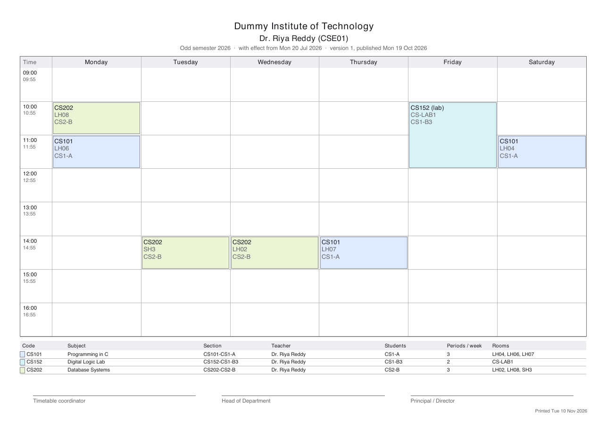
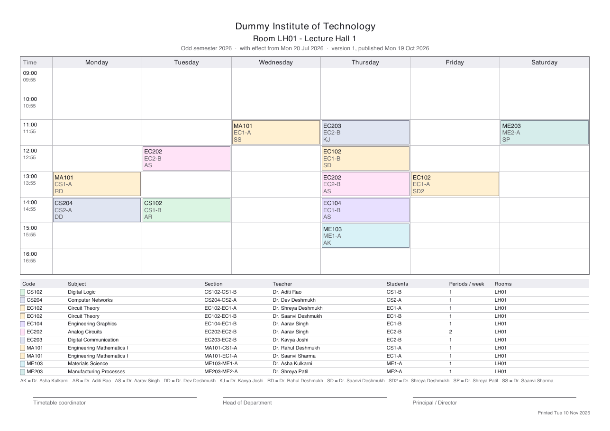

A clash-free timetable for your whole college, in minutes.
Send us the Excel sheets you already use. We return a timetable with no room, faculty or student clashes, in your college's own format, with a printed copy for every division, batch, faculty member and room. When something changes during the semester, we re-plan it for you.
| Mon | Tue | Wed | |
|---|---|---|---|
| 09:00 | Data StructuresProf. Rao · 204 | Maths IIIDr. Iyer · 101 | DBMS LabA1 · Lab 2 |
| 10:00 | DBMSProf. Shah · 204 | Data StructuresProf. Rao · 204 | DBMS LabA1 · Lab 2 |
| 11:00 | Lunch | EconomicsDr. Menon · 110 | Lunch |
| 12:00 | Maths IIIDr. Iyer · 101 | Lunch | DBMSProf. Shah · 204 |
Sample data. Every division, batch, faculty member and room gets a view like this.
We make the timetable for you
No software to install and no accounts to create. Your coordinator sends us the data, we do the scheduling and send back finished timetables.
Send your data
Last semester's timetable workbook as it is, plus this semester's subjects, faculty availability and rooms. Or fill in our Excel template.
We generate and check it
Our scheduler builds a clash-free timetable, then reduces gaps and respects lunch breaks, labs, batches and faculty preferences. Every rule is checked again before we send it.
You review and approve
Tell us what to change (a class to move, a teacher who can't come on Fridays) and we adjust only that, without new clashes.
You get every view
PDF and Excel for each division, batch, faculty member and room, ready to print and sign, plus a calendar file faculty can add to their phone.
Changes during the semester
A faculty member on leave, a room closed, a new batch? Message us. Only the affected classes move, and we suggest make-up slots and free substitutes.
What you receive
Real output from our system, for a made-up college. Each print has your institution's name, the date it takes effect, a version number, a key of subjects and teachers, and signature lines.





What we can handle for you
Designed around Indian college rules: divisions and batches, labs, Saturdays, shifts and NAAC / NBA reports.
No clashes, guaranteed
No room, faculty or student group is ever double-booked. Batches, multi-hour labs, lunch breaks, faculty limits and unavailability are all respected.
Your own Excel format
We read your college's existing timetable workbooks and return the new timetable in the same layout you use today.
Small changes stay small
A faculty member becomes unavailable? We re-plan and only the affected classes move. Classes you want fixed stay where they are.
Make-ups and substitutes
For cancelled lectures we find make-up slots and free substitutes that create no new clashes.
Hours and NAAC / NBA
Planned vs delivered hours per subject, faculty and division, warnings before a subject falls short, and a workbook ready for accreditation.
Exams and invigilation
An exam timetable where no student has two exams at once, with rooms seated and invigilators assigned fairly.
Electives without collisions
Give us who takes which elective and students' electives will clash as little as possible.
Room bookings
Seminars and events booked into rooms without disturbing any class, and free rooms found for a given time.
Tested on a real university's data
611 sections and 984 weekly sessions across 41 divisions, 120 faculty and 35 rooms, compared with the timetable made by hand.
| Made by hand | Generated | |
|---|---|---|
| Clashing slots (room / faculty / students) | 15 | 0 |
| Division-days with no lunch break | 4 | 0 |
| Student idle periods (lunch excluded) | 113 | 5 |
The whole timetable was generated in about 2 minutes. Re-planning after one faculty member became unavailable moved 1 of the 984 sessions.
Free for one semester for pilot colleges
We are taking on a small number of founding colleges for the coming semester, free of charge. You can start with one department and add the rest once you are happy.
You get
- Your semester timetable, made clash-free from your own data
- Printed PDF and Excel for every division, batch, faculty member and room
- Changes during the semester handled by us, quickly
- Direct contact with the people who build the system
We ask for
- One coordinator who sends us the data and changes
- A short weekly call: what worked, what didn't
- A written testimonial at the end, if it saved you time
- Keep your current process as a backup in the first semester. Nothing is lost if you decide to stop.
- We need very little data: names of faculty, rooms, divisions and subjects. No student personal data.
- A one-page pilot letter sets out what we hold and that we delete it when you ask.
Email us to join the pilot Message us on WhatsApp
Please tell us your college, roughly how many divisions you have, and when your next semester starts. Timetables for a January term are best started in December.
Who we are
This service is run by RIG Consultancy. We build the scheduling system ourselves and make the timetables for pilot colleges personally, so you always talk to someone who knows exactly how it works.
Email info.rigconsultancy@gmail.com · WhatsApp or call +91 87666 85471
Questions
What does it cost after the pilot?
Pilot colleges use it free for the semester. Plans after that are being shaped with pilot colleges' feedback, and a free option for small use is planned.
What happens to our data?
Your data is used only to make your college's timetable. It is kept on our own computer, not uploaded to any cloud service, kept separate from other colleges' data, and never sold. You get all of it back in Excel at any time, and we delete it when you ask. We follow India's Digital Personal Data Protection Act.
Do we need to install anything or create accounts?
No. You send us Excel files by email or WhatsApp and receive PDFs and Excel files back. Faculty get their own timetable as a PDF and a calendar file for their phone.
How quickly do we get the timetable?
Usually within a few working days of receiving complete data, including a round of your corrections. Changes during the semester are usually turned around the same or next working day.
Our timetable has unusual rules. Will it fit?
It already handles divisions and batches, multi-hour labs, combined classes, shifts, Saturday rules, lunch windows, faculty limits and preferences. Tell us your rules when you send the data.
Can we keep using our Excel format?
Yes. Send your existing timetable workbooks as they are, and you get the new timetable back in the same layout.